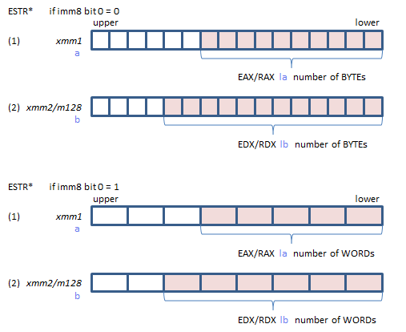
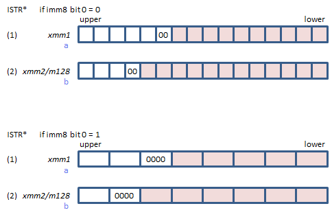
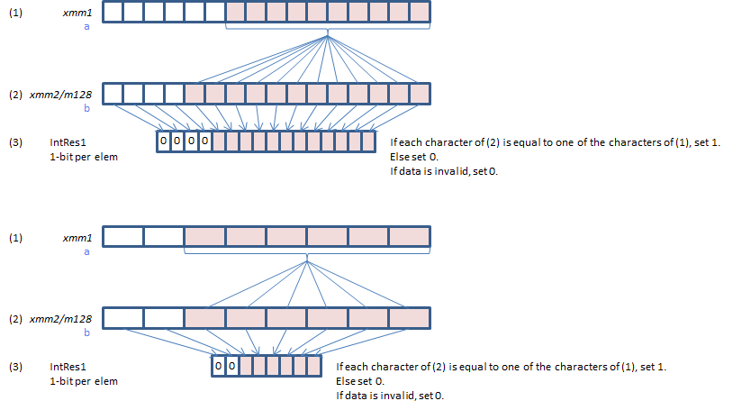
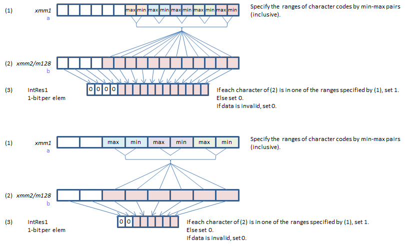
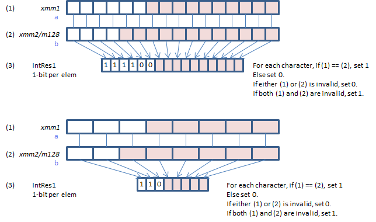
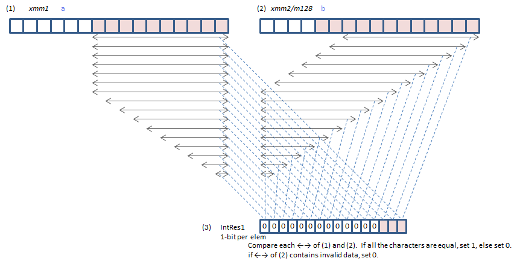
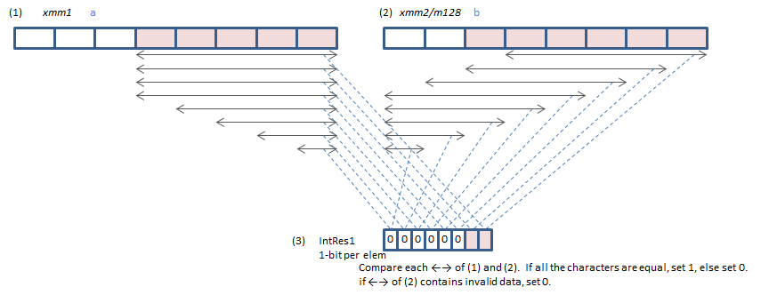
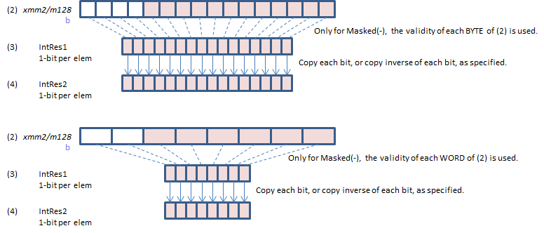
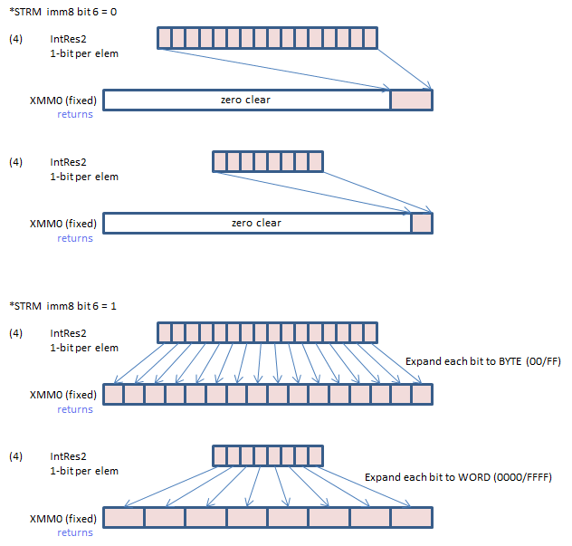

Instruction / intrinsic names don't specify what to do, but how the input/output data are passed.
| ESTR* | Explicit length: specify the number of BYTES / WORDS of the input string. |
|---|---|
| ISTR* | Implicit length: indicate the end of the input string with the terminating NUL. |
| *STRI | returns index |
|---|---|
| *STRM | returns mask |
| *str? | ?=a/c/o/s/z returns the value of flags |
What to do is specified in imm8 bit 3:2.
| imm8 bit3:2 | mode | what to do |
|---|---|---|
| 00 | Equal Any | Test if any of the specified characters are in the input string. |
| 01 | Ranges | Test if any characters within the specified ranges are in the input string. |
| 10 | Equal Each | Test if the input strings are equal. |
| 11 | Equal Ordered | Test if the needle string is in the haystack string. |
Character format is specified in imm8 bit 1:0.
| imm8 bit1:0 | character format |
|---|---|
| 00 | unsigned BYTE |
| 01 | unsigned WORD |
| 10 | signed BYTE |
| 11 | signed WORD |
The lowest BYTE/WORD is the start of the input string. Lower BYTEs/WORDs up to the end of the string are VALID. Upper BYTEs/WORDs beyond the end of the string are INVALID (if any).


For ESTR* instruction, the number of BYTEs/WORDs is the absolute value of the value specified. If the abosolute value > 16 (BYTEs) or 8 (WORDs), 16 or 8 is used.
For ISTR* instruction, NUL character itself is INVALID data. If there is no NUL, 16 BYTEs / 8 WORDs are all VALID.





Each bit of IntRes1 is converted to each bit of IntRes2 by the method specified in imm8 bit 5:4.
| imm8 bit5:4 | name | process |
|---|---|---|
| 00 | Positive Polarity(+) | Copy IntRes1 to IntRes2. |
| 01 | Negative Polarity(-) | Invert each bit of IntRes1 and set to IntRes2. |
| 10 | Masked(+) | Copy IntRes1 to IntRes2. |
| 11 | Masked(-) | If the corresponding BYTE / WORD of (2) xmm2/m128 b is valid invert the bit of IntRes1 and set to IntRes2. else copy the bit of IntRes1 to IntRes2. |

*STRI instruction returns the index 0 to 15 or 7 in ECX/RCX register (int type return value). If no bit is set, 16 or 8 is returned.
| imm8 bit 6 | return value |
|---|---|
| 0 | The bit index number of the least significant set bit of IntRes2. |
| 1 | The bit index number of the most significant set bit of IntRes2. |
*STRM instruction returns IntRes2 in XMM0 register (__m128i type return value).
| imm8 bit 6 | return value |
|---|---|
| 0 | Returns IntRes2 in the lowest 16 / 8 bits. |
| 1 | Returns 128-bit data that each bit of IntRes2 is expanded to BYTE / WORD. |

Flags
| CF | 0: IntRes2 == 0 1: IntRes2 != 0 |
|---|---|
| ZF | 0: All elements of (2) xmm2/m128 b are valid. 1: Not all elements of (2) xmm2/m128 b are valid. |
| SF | 0: All elements of (1) xmm1 a are valid. 1: Not all elements of (1) xmm1 a are valid. |
| OF | The least significant bit of IntRes2. |
| AF | 0 |
| PF | 0 |
*str? intrinsic returns the value of one bit of the flags (0 or 1).
| *strc | CF |
|---|---|
| *strz | ZF |
| *strs | SF |
| *stro | OF |
| *stra | if (CF == 0 && ZF == 0), returns 1 else returns 0. |
| bit | value | meaning | ||
|---|---|---|---|---|
| 1:0 | Character Format | 00 | unsigned BYTE | |
| 01 | unsigned WORD | |||
| 10 | signed BYTE | |||
| 11 | signed WORD | |||
| 3:2 | Mode | 00 | Equal Any | Test if any of the specified characters are in the input string |
| 01 | Ranges | Test if any characters within the specified ranges are in the input string | ||
| 10 | Equal Each | Test if the input strings are equal | ||
| 11 | Equal Ordered | Test if the needle string is in the haystack string | ||
| 5:4 | Polarity | 00 | Positive Polarity(+) | Copy IntRes1 to IntRes2. |
| 01 | Negative Polarity(-) | Invert each bit of IntRes1 and set to IntRes2. | ||
| 10 | Masked(+) | Copy IntRes1 to IntRes2. | ||
| 11 | Masked(-) | If the corresponding BYTE / WORD of (2) xmm2/m128 b is valid invert the bit of IntRes1 and set to IntRes2. else copy the bit of IntRes1 to IntRes2. |
||
| 6 | Return Value | 0 | *STRI instruction: returns the bit index number of the least significant set bit of IntRes2. *STRM instruction: returns IntRes2 bits in the lowest bits. |
|
| 1 | *STRI instruction: returns the bit index number of the most significant set bit of IntRes2. *STRM instruction: returns 128-bit data that each bit of IntRes2 is expanded to BYTE / WORD. |
|||
| 7 | unused | must be 0. | ||
| register | instruction | |
|---|---|---|
| EAX/RAX | ESTR* | (IN) the number of BYTEs/WORDs of operand 1 |
| EDX/RDX | ESTR* | (IN) the number of BYTEs/WORDs of operand 2 |
| ECX/RCX | *STRI | (OUT) the index number |
| XMM0 | *STRM | (OUT) mask |